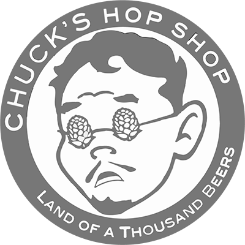
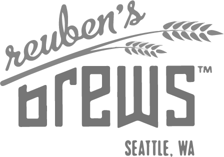

"...Don Lucho created a fantastic fried yuca sub for vegetarians. It's filling and delicious."
Menu
Sandwiches

Chicharron $9
Lightly fried pork, lettuce, yams, Sarza Criolla and Rocoto or Aji Amarillo sauce.
- Sarza Criolla
- Thinly sliced red onions mixed with cilantro, lime juice and a pinch of salt.
- Rocoto Sauce
- A spicy Peruvian pepper sautéed with onions & garlic and later blended with a touch of evaporated milk
- Aji Amarillo
- A mild Peruvian pepper sautéed with onions & garlic and later blended with a touch of evaporated milk.
Don Lucho's visits the following Ballard breweries/shops on a regular basis:
- 
- 
Catering
We would love to cater your party, private event, wedding or company gathering. We take great pride in presenting traditional Peruvian dishes in gourmet sandwiches. Peruvian tapas for large groups are also available. We can custom fit a menu for your needs, just contact us and we can work together!
You can reach us via email with specific info on the type of event, number of people and date/time or by filling out our online form. Thank you!
Check out our in-office catering menu
Blog
I invite you to follow Donluchos blog, all posts are about culinary experiences and journeys to Peru. I visit several times a year in order to get inspiration and new ideas for the Seattle street food life.
About
The dream of sharing my Peruvian culture and cuisine in the city of Seattle began several years ago. To get this venture started, I visited all different kinds of sandwich shops, carts and markets throughout Peru. I picked out my favorite sandwiches and added a twist of my own; this special twist is from paying attention to my Mother's old family recipes (Gracias Mamá!).
Why sandwiches? Because Seattlelites love sandwiches!